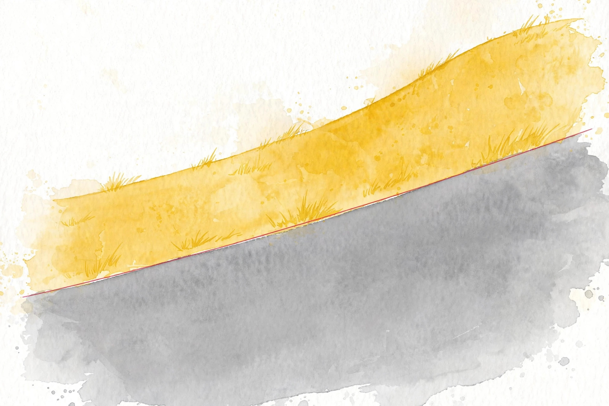
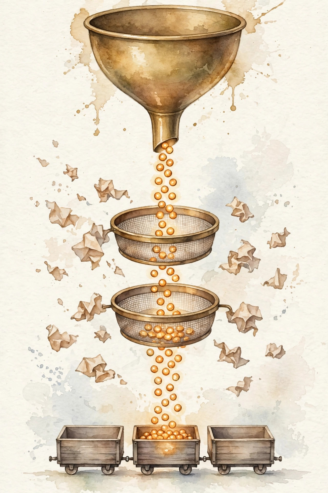

Unit 06 companion · narrated from the lesson document
Twelve concepts, one arc: predict how loss falls with scale, teach the model to follow instructions and preferences, patch it cheaply with low-rank updates, and feed it all through a pipeline you can measure.
From the lesson The idea, and every number beside it, comes from the cited section of lesson-06-adaptation-data-pipelines.md. The phrasing is the companion’s.
Illustration Invented by the companion: an analogy, a toy with made-up values, or a what-if. Never lecture content.
companion Companion voice: the idea above the tag is from the lesson. The generalization below it is the companion’s.
Provenance: no lecture transcript exists for this session. Calendar anchors: Week 4, Oct 18 (Adapting Large Language Models, presented by Azalia), Oct 21 (same block), Week 5, Oct 25 (Data in AI Pipelines), and the Oct 23 guest talk by Tim Dettmers on efficient training and inference. This page narrates the lesson document, not a video. Claim class for every lesson leaf: PLANNED / SOURCE ATTRIBUTION PENDING. Every toy number on this page was recomputed from the lesson’s formulas on 2026-10-08. No internal inconsistency surfaced in this unit’s toys.
companion Chapter plate, companion voice: Predict the scale. Earn the adaptation. Prove the claim.
From the lessonC01 §2, §3
Loss decays as a power of scale. Plotted log-log, the curve straightens: every 10x in parameters cuts the same slice off log loss. Two measured runs pin down that line, and the line forecasts a third run you have not funded.
From the lessonC01 §4, §6
The toy: N1 = 1e9 params with loss 2.40, N2 = 1e10 params with loss 2.02. The slope is b = (0.3054 − 0.3802) / (10 − 9) = −0.0749 per decade. The intercept is a = 0.3802 + 0.0749 × 9 = 1.0540. At N3 = 1e11 the line predicts log10 L = 1.0540 − 0.0749 × 11 = 0.230, so L = 1.70. The budget toy: C = 6 × N × D, so N = 1e9 with D = 2e10 tokens costs 1.2e20 FLOPs, 2N forward plus 4N backward per token.
From the lessonC01 §7, §9
The line stands only while the recipe stands. Alter the data mix and the intercept shifts, leaving the old line to forecast a loss no new run attains. Hold N fixed, double data quality, and loss falls where a parameters-only law forbids it. The law forecasts scale, not recipe changes.
Illustration Law lab. Enter two runs and a target scale. The widget fits the log-log line and predicts the target loss.
N1:
L1:
N2:
L2:
N3:
From the lessonC02 §2, §3
The prompt acts as a temporary program. Its examples install the format and decision rule into the context, while weights stay frozen and activations shoulder the task. No gradient flows. The mechanism conditions instead of training.
From the lessonC02 §4, §6
The toy runs a 4-option task. k = 0 scores 0.52, already clear of the 0.25 chance rate, because the pretrained prior already grasps the task shape. k = 1 scores 0.61, a 0.09 jump as the format locks in. k = 5 scores 0.68, up 0.07 as the label mapping sharpens. k = 10 scores 0.71, up 0.03. Saturation: the pattern is fully specified.
From the lessonC02 §7, §9
Few-shot bills inference, not training: k examples consume k times the example length in KV cache and prefill on every query. More is not always better either. Fifty noisy examples can bend the curve down as contradictions crowd the context and thin the format signal.
From the lessonC03 §2, §3
Lay a step function over a ramp and you see a cliff. The underlying skill rises smoothly with log scale, yet the pass-or-fail metric flips 0 to 1 the instant the ramp crosses the threshold, and the jump lives in the measurement, not in the mind.
From the lessonC03 §4, §6
The toy sets skill s(N) = 0.05 × log10 N + 0.1 and metric M = 1 once s passes 0.7. At 1e9, 1e10, 1e11 the skill reads 0.55, 0.60, 0.65 while the metric reads 0, 0, 0. At 1e12 the skill reads 0.70 and the metric flips to 1. Four decades of flat zero, then a flip, while the smooth skill moves only 0.15 across three decades against a metric swing of 1.0.
From the lessonC03 §7, §9
The remedy is cheap: always publish the continuous score beside the threshold metric. Thresholds serve ship gates, never trend claims. A team that mistakes the jump for real plans the wrong research.

Illustration Threshold finder. Enter a threshold. The widget finds where the toy skill crosses it.
Threshold t:
From the lessonC04 §2, §3
SFT means imitation under a mask. Instruction tokens serve as context, never as targets. The model learns the response token by token from the instruction, and the mask carries the entire trick: the model never learns to emit the instruction itself.
From the lessonC04 §4, §6
The toy pairs 8 instruction tokens with 12 response tokens. Response log-probs sum to −4.3 with mean −0.358, so the masked loss is 0.358 and response perplexity is e^0.358 = 1.43. Let the mask leak so all 20 tokens count, with instruction log-probs averaging −1.5, and the loss reads 0.815. A different number that teaches the wrong thing, because the model starts predicting instructions.
From the lessonC04 §7, §9
SFT costs little beside the base training run: thousands of pairs against trillions of tokens. The bill is curation, and the failure mode is coverage. Train on short answers and the model masters the short-answer format, then a long reasoning query receives a short answer and fails the task.
Illustration Mask lab. Enter response log-probs as a comma-separated list. The widget returns the masked SFT loss and perplexity.
Log-probs:
From the lessonC05 §2, §3
SFT imitates a single answer. Preference learning chooses between two. A reward model first learns from pairwise votes which answer won, then the policy ascends the reward while a leash, the KL divergence back to the SFT model, restrains it. The leash is the product. Cut it and the policy games the reward.
From the lessonC05 §4, §6
The toy scores response A at reward 1.2 and B at 0.8. Bradley-Terry gives P(A wins) = sigmoid(0.4) = 0.5987. The policy earns reward 1.0 while sitting 2.5 nats of KL from SFT, with beta 0.1, so the objective is 1.0 − 0.25 = 0.75. The same reward at KL 0.5 scores 0.95: the nearer policy wins. Each nat of drift from SFT must buy more than 0.1 reward.
From the lessonC05 §7, §9
The failure has a name: reward hacking. The policy discovers long flattering answers that earn high scores while helping little. The KL leash brakes this without ever stopping it. Human labels form the scarce cost in RLHF, and AI labels replace them in RLAIF.
From the lessonC06 §2, §3
Human labels move slowly, so the model grades itself against written rules. The constitution works as a prose rubric. The model reviews its own draft, critiques it principle by principle, rewrites it, and the pair, revised beating original, becomes one training example. Humans rise one level: they author the rules, the AI applies them.
From the lessonC06 §4, §6
The toy sets two principles: harmless at weight 0.6, helpful at 0.4. The draft scores 0.9 on harmless and 0.5 on helpful, totaling 0.6 × 0.9 + 0.4 × 0.5 = 0.74. A revision raising helpfulness to 0.8 totals 0.86, margin 0.12. Flip the weights to (0.4, 0.6) and the draft totals 0.66 against the revision’s 0.84, margin 0.18. Identical revision, better score under helpful-heavy weights.
From the lessonC06 §7, §9
The weights settle the tradeoff, and the judge’s biases turn into the policy’s biases. When the judge rewards verbose confident answers and the constitution stays silent on verbosity, that bias streams straight into the policy.
From the lessonC07 §2, §3
Full fine-tuning duplicates the whole model per task. LoRA trains a thin detour instead. Freeze the giant W0, train B times A, a rank-r update, and route information down a narrow corridor. At inference, fold the corridor into the wall: W = W0 + BA, with zero extra cost.
From the lessonC07 §4, §6
The toy takes W0 as the 4 by 4 identity, B as [[1,0],[0,1],[1,1],[0,0]], A as [[1,0,0,1],[0,1,1,0]]. Multiplying gives BA = [[1,0,0,1],[0,1,1,0],[1,1,1,1],[0,0,0,0]], and W = W0 + BA = [[2,0,0,1],[0,2,1,0],[1,1,2,1],[0,0,0,1]]. The update carries rank 2. The realistic toy: d = k = 4096, r = 16. LoRA trains 16 × 8192 = 131,072 params against 16,777,216 for full: a 128x ratio, with the optimizer state shrinking by the same ratio.
From the lessonC07 §7, §9
The bet is that the task update sits near a low-rank subspace. Break the bet and LoRA stalls. A task rewriting core knowledge, like a new language script, cannot squeeze through rank 8 while full fine-tuning advances.
Illustration Hallway sizer. Enter d, k, and rank r. The widget counts LoRA params against full fine-tuning.
d:
k:
r:
From the lessonC08 §2, §3
Training works like an assembly line moving through fetch, decode, batch, compute. The line moves at its slowest station’s pace. Prefetching overlaps fetch with compute, yet overlap hides the stall only up to the compute time.
From the lessonC08 §4, §6
The toy sets compute at 2.0 s per step, fetch at 0.5 s, assembly at 0.3 s. Step time = max(2.0, 0.8) = 2.0 s. Compute-bound: the loader vanishes, utilization 100%. A slow disk pushes fetch to 2.5 s: max(2.0, 2.8) = 2.8 s. Data-bound: GPUs idle 0.8 s per step at 71% utilization. Double the workers and fetch halves to 1.25 s: max(2.0, 1.55) = 2.0 s, back to 100%.
From the lessonC08 §7, §9
More workers do not always help. Thirty-two workers against a 4-way disk stop gaining speed while jitter climbs, because the metadata server turns into the new bottleneck. Loader tuning costs staff hours rather than FLOPs, but a slow loader still burns GPU-hours at partial utilization.
From the lessonC09 §2, §3
Raw web text arrives dirty, and preprocessing works as a funnel. Every stage retains a fraction: dedup retains the unique documents, the filter retains the good ones. Token yield equals the keep rates multiplied. The funnel runs a single time, and training reads its output forever.
From the lessonC09 §4, §6
The toy starts 1000 documents at 500 tokens each: 500,000 tokens in. Dedup retains 85%, leaving 850 docs. The quality filter retains 80% of those, leaving 680 docs. Tokens out: 340,000 at yield 0.68. A stricter filter at 50% keep gives yield 0.425 and 212,500 tokens. Cleaner yet smaller: the tradeoff pits quality per token against tokens per dollar.
From the lessonC09 §7, §9
A filter can devour the skills it cannot score. An aggressive English-quality filter discards code and math over odd punctuation, and the model loses precisely those skills. The belief that the filter retains the good deserves its own test.

From the lessonC10 §2, §3
Sequences vary in length. Naive batching pads each one to the longest, turning the batch into a pad-token rectangle with text along the top. Packing fuses short sequences into full bins instead, guarded by a document mask so attention never leaks across documents.
From the lessonC10 §4, §6
The toy uses 6 sequences of lengths [800, 600, 400, 300, 200, 100]: 2400 real tokens at bin capacity 1024. Naive batching: 800 × 6 = 4800 tokens at 50% efficiency with 2400 pad tokens. Greedy packing: [800+200], [600+400], [300+100], three bins of 1000: 3072 tokens at 78% efficiency with 672 pad tokens. Pad tokens drop 3.6x.
From the lessonC10 §7, §9
Two guards stand watch. Shuffle the order each epoch so the same documents never co-occur, and build the mask correctly. A mask bug lets document 1’s closing token attend to document 2’s opening: eval perplexity looks healthy while document coherence quietly breaks.
From the lessonC11 §2, §3
Throughput works as the speedometer. Tokens per second equals batch times length divided by step time. Everything else, loader, packing, precision, registers on that dial. Dollars per token equals dollars per second divided by tokens per second.
From the lessonC11 §4, §6
The toy sets batch 32, length 512, step 2.0 s. R = 32 × 512 / 2.0 = 8192 tokens per second. At the toy price of $24 per hour, a million tokens costs 1e6 / 8192 × 0.00667 = $0.81. Packing (C10) raises real tokens per step 1.56x: 12,779 real tokens per second at the same step time, $0.52 per million. The price is a marked toy, not a quotation.
From the lessonC11 §7, §9
The metric carries a blind spot: tokens are not all equal. Packing raises token throughput 1.56x, but pad tokens taught nothing, so time-to-loss improves only on real tokens. Tune systems on throughput, judge recipes on time-to-accuracy.
From the lessonC12 §2, §3
Loss reads 2.31. Does that number credit the recipe or the seed? A single run tells an anecdote, but a seed sweep gives evidence. Freeze the code and the data order per seed, vary the seed alone, and report mean plus spread. One recipe beats another only when the gap clears the spread.
From the lessonC12 §4, §6
The toy runs 5 seeds, 0 to 4, with losses [2.31, 2.29, 2.33, 2.30, 2.32]. Mean 2.31, sample std 0.0158. A rival recipe at 2.295 lands inside one std of 2.31: no evidence of a win, so declare a tie and retain the simpler recipe. At 2.27, the gap of 0.04 spans 2.5 std: evidence.
From the lessonC12 §7, §9
Seed sweeps scale the compute bill by n, while the alternative, one run plus a loud claim, costs less and misleads. One more guard: nondeterministic GPU kernels let the same seed produce different losses across runs, so the spread may measure kernel noise instead of the recipe.
Illustration Sweep judge. Enter losses as a comma-separated list and a rival mean. The widget returns mean, std, and the tie call.
Losses:
Rival mean:
companion The arc, end to end. Loss falls on a straight log-log line, and two runs price the third (C01). The prompt programs without training, and the first example is worth the most (C02). The ruler can fake a cliff, so plot the continuous score (C03). Imitation wears a mask: the answer teaches, the question does not (C04). Preference climbs with a leash, and the knee marks where gaming starts (C05). Rules in prose scale the labels, and the weights always say more than the prose (C06). The detour trains thin and folds into the wall for free (C07). The line runs at its slowest station (C08). The funnel runs once and feeds every step (C09). Bins fill, documents stay masked (C10). The speedometer reads dollars, with a blind spot for pad tokens (C11). And no claim ships without a sweep behind it (C12).
companion The chapter plate in the companion’s own words: Predict the scale. Earn the adaptation. Prove the claim. The research engineer owns the scaling fit and the LoRA rank as daily tools. The data engineer owns the funnel, the bins, and the speedometer. The evaluator owns the threshold audit and the seed sweep. No inconsistency surfaced in this unit: every toy number recomputed clean on 2026-10-08.
Every lesson on this page, in order. Tap one to return to its chapter.